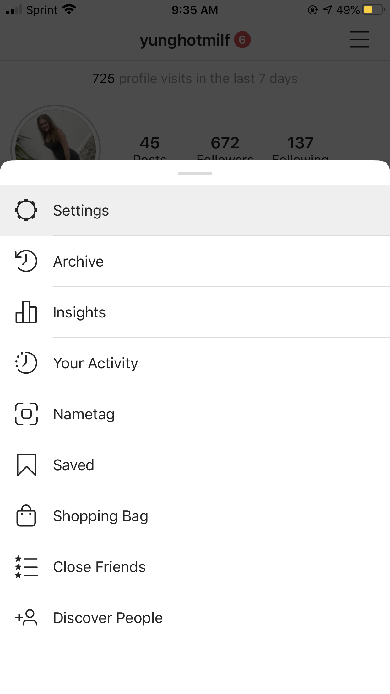
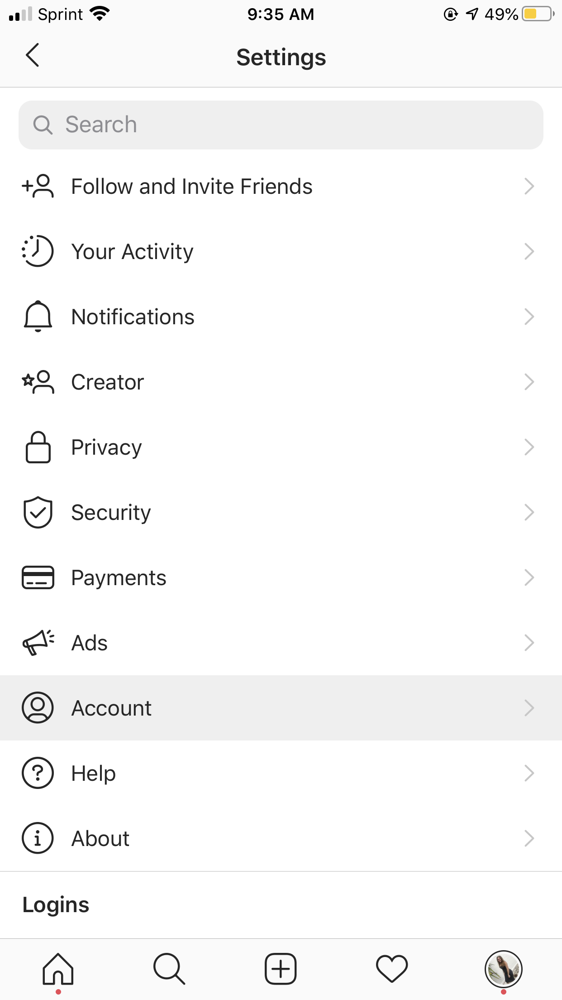
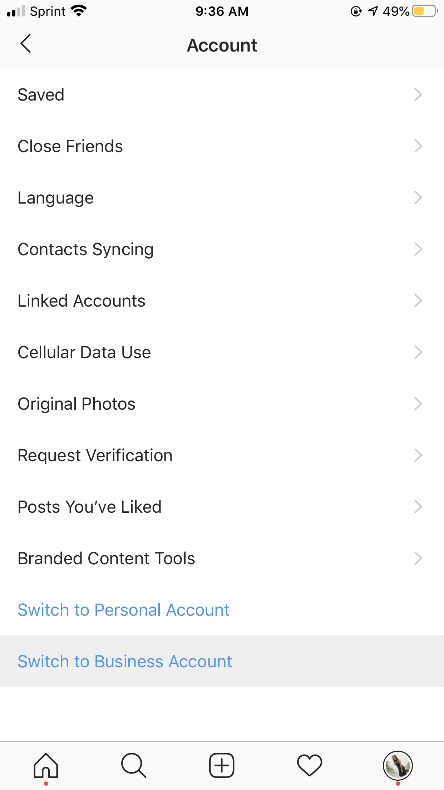
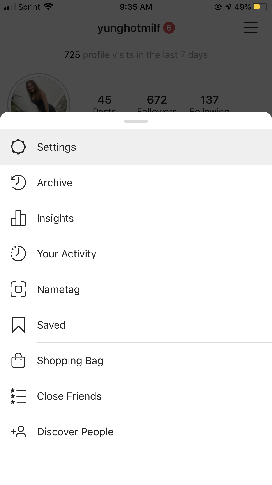
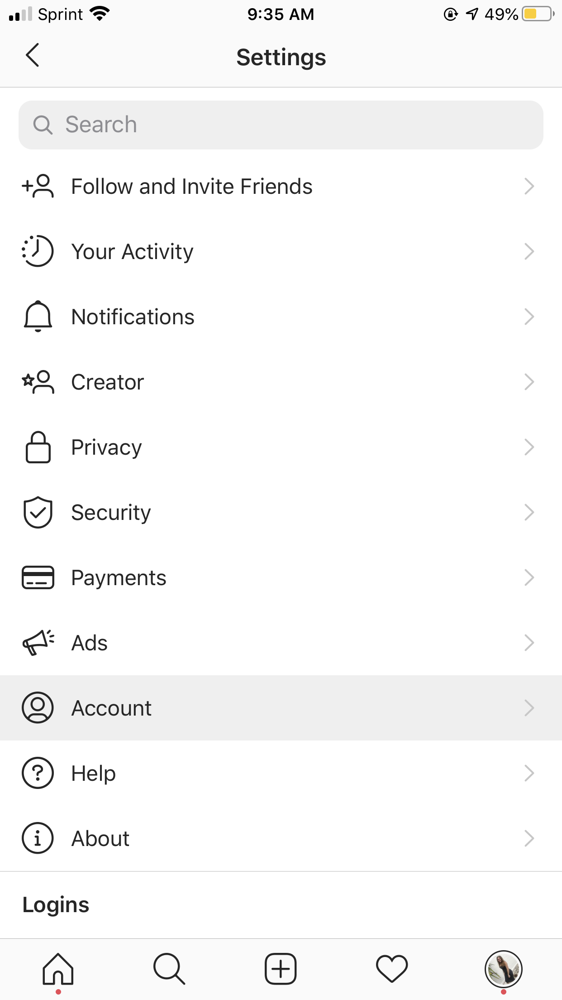
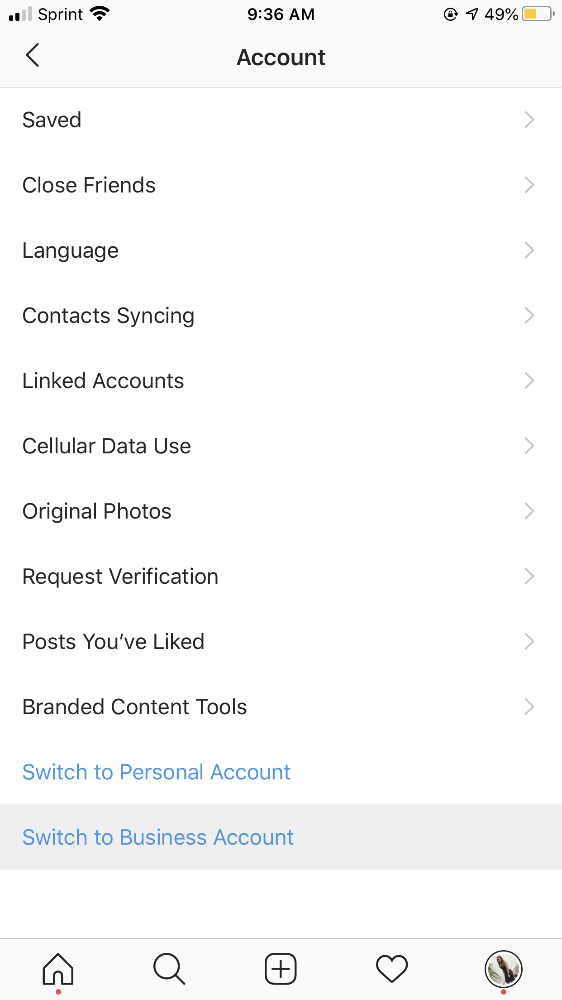

Pages
Posted: 04/21/2020
Welcome to my Free Instagram Guide!
There are so many tools you can use to grow your instagram and soo many classes, but a lot of them you have to pay for...for me this is unnerving because how am I to know they’ll give me relevant or useful information? What if it’s all things I already know? I’m not saying they’re never worth your money, because I genuinely don’t know I’ve never been able to bring myself to paying. However I DO know there is tons of free information about gaining followers all over the internet. So, today we’ll be going over everything I’ve learned and collected about gaining followers for an affordable price of $0.00!! Haha but really I hope this helps guide you to your goals!
- Go Pro -- If growing your instagram is important to you, the first thing you should do is change your page to a business account if you haven’t already. This allows you to see really helpful analytics like how many accounts you’re reaching, your impressions, the trends of how many people are unfollowing and following you each day, and much more! You can easily do this by going to your Settings, Account, and then “Switch to Business Account” at the bottom. It will take a few days to a week usually until you start seeing all this data but when you do it’ll feel great!
- Good Content! -- This is one of the most important things that cannot be avoided. No duh right, but there are ways to make this a little easier. There are websites like Unsplash that offer you free pictures at your disposal. Now this isn’t something I’d recommend for every page, but let’s say your page is about animals, snowboarding, or for your business and you need stock photos of offices/people working. Now if your blog is about yourself and your goal is to be an influencer, use your own photos. If you’re someone that doesn’t get the chance to do your hair and makeup everyday (like me) then on the days that you do, make an effort to take 3-5 pictures of yourself in different outfits. This way you can consistently post content over a longer period of time if you happen to get too busy for the next week! And if you’re not too busy that week then those pictures will come in handy for a week when you are! You can do a tbt if you want, but no one needs to know if it wasn’t taken that exact same day. Finally another option if you’re short on pictures is posting caption pictures with little bits of advice or quotes. This can add value to your page if you color block it right (we’ll go over that next) and it’s great for last minute posts if you haven’t posted in a few too many days.
- Obviously a huge part of what you post is how it looks. For a long time I struggled with getting my instagram to look uniform, I tried making all my backgrounds the same color but it still looked off. Once I finally realized what it was I felt stupid because it was so obvious! Pick an instagram filter and use it on all of your posts, this helps create a uniform look even if you’re not planning out all of your pictures to a specific color blocking pattern.
- Another thing to note: it is important that you post frequently, you don’t have to post everyday but I would aim for a minimum of 3 posts a week.
- Hashtags -- After your pictures come the next thing which is hashtags, I personally use the maximum (30) on every single post. This ensures people will see your posts even if you don’t have a lot of followers yet. There are great free tools you can use to find the right hashtags for you! My favorite app to use is Tagstagram, it gives you many different categories and the top hashtags for the categories. I use this for the base of all my posts, then I search the tags on instagram to see how many posts each tag gets, if it’s anything under 1 million I take it out and replace it with a more popular tag from a similar category to my own.
- Following & Liking -- This strategy I’m about to tell you is the exact way I grow my instagram, when I keep up with it and do it everyday I gain close to 30 followers a day! There are lots of places out there that I’ve read that suggest you follow 50-100 people an hour everyday in hopes of them following you back. The idea is you go to a page of a brand or influencer that posts similar content to your own, then you go to their followers list and hit the follow button down the list 100x. There’s a few reasons why this is the WRONG approach.
- This leads you to following fake pages, bots, or people who are generally unactive.
- This leads you to following people who have private accounts, and if in the future you want to unfollow the people who didn’t follow you back you won’t be able to find the accounts where your request is still pending. This means later on your following list may slowly increase without you realizing because private accounts who haven’t been active in a week or 2 allowed you to follow them but didn’t follow you back. In short this also really complicates any efforts to keep your following to follower ratio good.
- This can lead to you gaining 100 followers but following 500, and that can actually greatly deter real people from following you back or taking your page seriously.
- Eventually you will want to unfollow a lot of the people you followed and this takes a painstakingly long time (much longer than the following process).
- Finally one of the most aggravating reasons, THIS LEADS TO SHADOW BLOCKING!!! Taking this approach easily leads to instagram banning your account from following or liking, without any warning due to their efforts to keep people from abusing the algorithms to gain unnatural followers. This has even led to my page not being able to post anything for 2 days! In the end it slowed my efforts tremendously and I fear it almost led to me losing my page.
- Profile -- Starting with the basics, it’s important to have your bio something short and relevant to your topic, and be sure to include emojis (no matter the category) to emphasize what you hope to point out. Also be sure to utilize the URL line in the bottom if there is anything else you can promote in there, even if it’s just your other social media at this time. Next is the juicy knowledge; your name! This is something not as many people think about. Lets say your username is fitnessmom, great choice! It’s easy to get what your Instagram is about and great for keyword searches. But then your name is Mary Jane, well if someone is looking for inspirational fitness pages on their instagram search bar, they probably won’t be searching for your name. They’ll search with keywords like: inspiring, workout, gym, etc. Make the search bar your friend and give it more to work with by also making your name something relevant for your followers, like Inspiring Mary. This way between your username and name, your page will be much more likely to come up!
- Extras -- There are a number of other things you can do, some others that I will touch on are Stories and community interaction. I personally haven’t done a lot with my stories yet, but that’s not to say they aren’t important. Uploading to your stories regularly can increase your followers and community interaction. Making your followers feel like you’re a real person is a great way to grow a faithful community of followers that feel like they know you and actually want to support you. This goes hand in hand with responding every time people comment on your photos or making your own genuine comments (specific to the post and not super general like “nice pic!”) on other people’s pictures.
 





Getting a large following on Instagram takes work, but if you put continuous effort into your page it doesn’t have to be hard! I hope you take this information to heart and try it out as it can greatly change your whole platform!